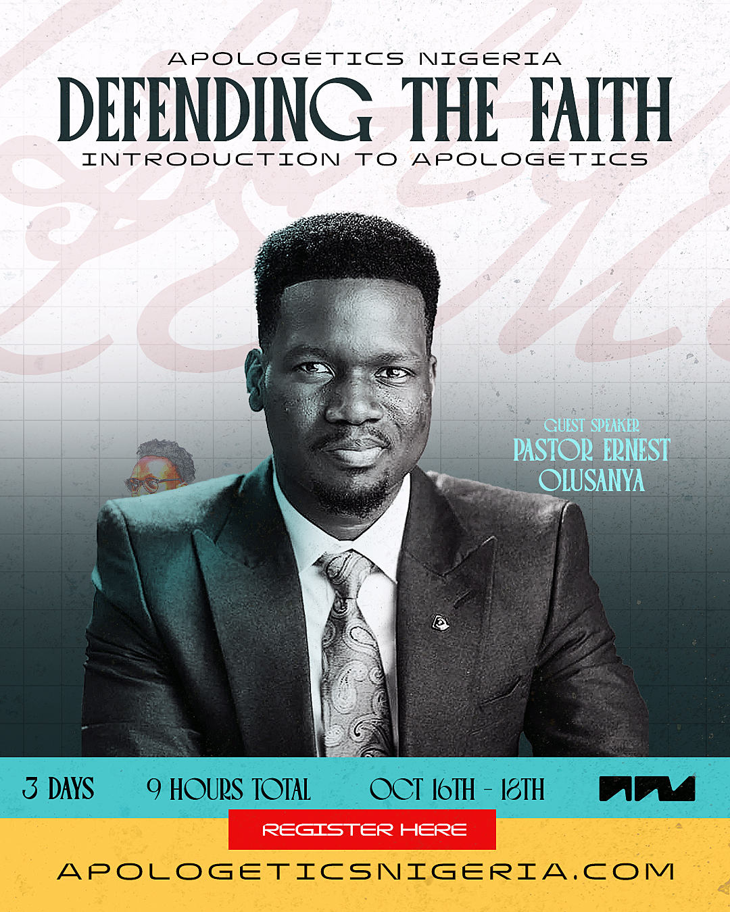
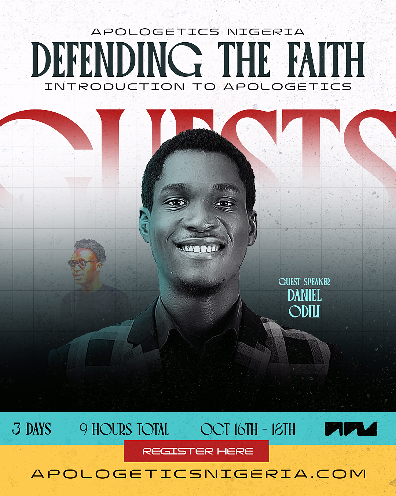
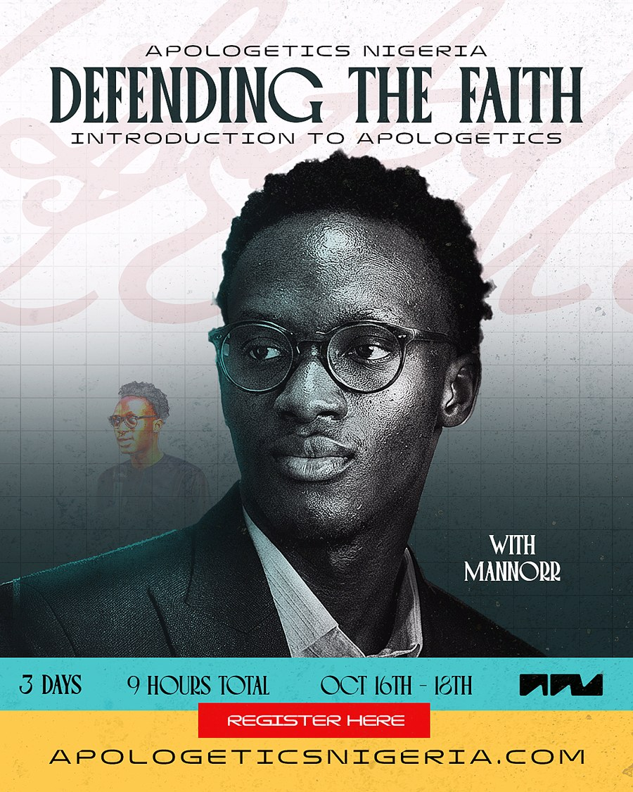
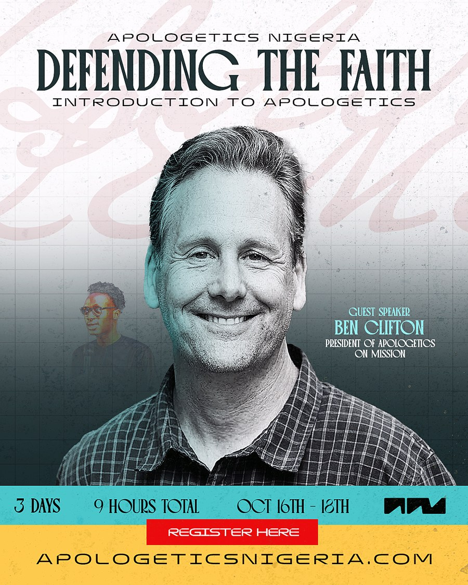

Joining from abroadLagos & London 7:00–10:00PMToronto & New York 2:00–5:00PMHouston 1:00–4:00PMLos Angeles 11:00AM–2:00PM
Who is teaching
Four voices,three evenings.
Each evening is carried by someone who has spent years with the material — and every session ends with live Q&A, so you can ask them directly.

Day 01 · Friday 16 October
Pastor Ernest Olusanya
Guest speaker
Foundations — what apologetics is, the case that God exists, and why the Bible can be trusted as history.

Day 02 · Saturday 17 October
Daniel Odili
Guest speaker
Why Jesus? — the question the whole evening turns on. Daniel opens Day Two before it moves into what Islam rejects about him.

All three evenings
MANNORR
Host · Founder, Apologetics Nigeria
Examines the claims of Islam through its own trusted sources and makes the historical case for Christ. On Day Two, takes the evening through his deity, his death and his resurrection.

Day 03 · Sunday 18 October
Ben Clifton
President of Apologetics on Mission
Answering the claim that there is no evidence for God — followed by live Q&A.
Why this training
The questions arealready being asked.
Most believers are not short on faith. They are short on language — the words to explain why they believe what they believe when someone pushes back.
So the conversation gets avoided. The colleague's objection goes unanswered. The child's question gets a shrug. The Muslim neighbour is met with silence, or worse, with something confidently said and badly sourced.
Scripture does not leave us there. We are told to be ready always to give an answer to every man that asketh a reason of the hope that is in us, with meekness and fear. That readiness is learnable. Over three evenings, we will build it.
“How do you know God exists — and not just yours?”
“The Bible has been changed. Everyone knows that.”
“Jesus never claimed to be God. That came later.”
“Islam has the Quran. Where is your evidence?”
“Why would a good God allow all this suffering?”
The three evenings
What wewill cover.
Each evening runs three hours — teaching, worked examples, and live Q&A. Come to all three if you can; each one stands on its own if you cannot.
Day 01Friday 16 October · 7–10PM WAT
Foundations
With Pastor Ernest Olusanya
What apologetics is — and what it is not
The case that God exists: cause, design, and moral law
Why the Bible can be trusted as a historical document
Manuscripts, transmission, and the “it was changed” objection
Day 02Saturday 17 October · 7–10PM WAT
Jesus & Islam
With Daniel Odili & MANNORR
Why Jesus? What sets him apart from every other teacher and prophet
His deity: what the Qur’an denies, and what Jesus himself claimed
His death: the crucifixion, and the Qur’an’s denial of it (4:157)
His resurrection: the claim Christianity stands or falls on
Day 03Sunday 18 October · 7–10PM WAT
Doubt & the conversation
With Ben Clifton & MANNORR
Suffering, evil, and the questions that hurt
Answering atheism and the “no evidence” claim
Handling your own doubts without fear
How to actually start — and finish — the conversation
Who it is for
No backgroundrequired.
If you can read your Bible and hold a conversation, you can do this training. It is built for Nigeria first, and open to anyone, anywhere.
BelieversAnyone who has frozen mid-conversation and wished they had an answer ready.
Youth & campus leadersThose carrying the questions of a generation that Googles everything.
StudentsFacing lecturers, coursemates, and a faith they have never had to defend before.
ParentsWhose children are asking questions the Sunday school answer no longer covers.
Pastors & workersWho want a framework they can teach on to the people they lead.
Honest scepticsYou are welcome here. Come and test the arguments for yourself.
Registration
Saveyour seat.
Registration is free. We will send your joining link and a reminder before each session.
Completely free — no ticket, no fee
Live online, joining link sent by email
Sessions recorded — replays sent to everyone registered
Notes and slides shared after each evening
Open worldwide, hosted from Lagos
Questions
Before youregister.
Is it really free?
Yes. There is no ticket and no fee. If the training serves you and you would like to help us keep doing it, you are welcome to give — but nothing is expected, and nothing is gated.
Will the sessions be recorded?
Yes. Every evening is recorded and the replay is sent to everyone who registered, so a missed session is not a lost session.
What if I can only make one or two evenings?
Still register. Each evening stands on its own, and you will receive the recordings for the ones you miss.
Do I need any prior study?
None at all. We start from the beginning. If you have studied apologetics before, the Islam and resurrection material on Day 2 will still give you plenty to work with.
Can I bring my church group or fellowship?
Please do. Ask each person to register with their own email so they receive their own joining link and replays. If you are bringing a large group, mention it in the last question on the form and we will follow up.
I am not a Christian. Am I welcome?
Completely. Come and hear the case made and press it where you think it is weak. Every session ends with open Q&A, and honest questions are the ones we most want.
Which platform will it be on?
The training runs live online. Your joining link will be emailed to you before the first session, along with a reminder each evening.